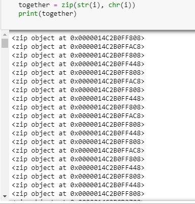
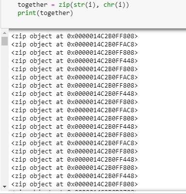

היי נתקלתי במשהו מוזר במחברת 5, כשאני מנסה להדפיס ערך של זיפ אני מקבלת פלט מוזר:

משהו יכול לומר לי איך אי מסדרת את זה?
*לא מצאתי תשובה בגוגל
תודה מראש לעוזרים!
ר

היי נתקלתי במשהו מוזר במחברת 5, כשאני מנסה להדפיס ערך של זיפ אני מקבלת פלט מוזר:

משהו יכול לומר לי איך אי מסדרת את זה?
*לא מצאתי תשובה בגוגל
תודה מראש לעוזרים!
ר
הפונקציה zip רק מצמדת בין סדרות איברים. זה לא נראה כמו המצב פה (chr מחזיר תו אחד).
מה את מנסה לעשות?
תודה @Yam
ניסיתי ליצור tuple כדי להדפיס ביחד ערך ראשון שיהיה מספר, וערך השני שיהיה התו שאותו המספר מייצג, אבל עכשיו אני מבינה שזה מיותר לשים אותם בזיפ…
יש לי כמה עניינים שלא לגמרי סגורים אצלי לגביי zip אם תוכל בבקשה לסגור לי את הפינה: